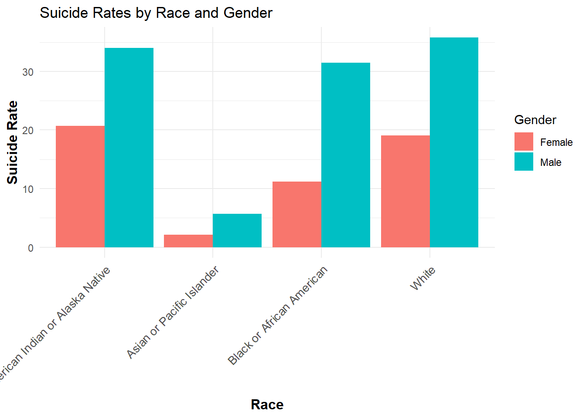
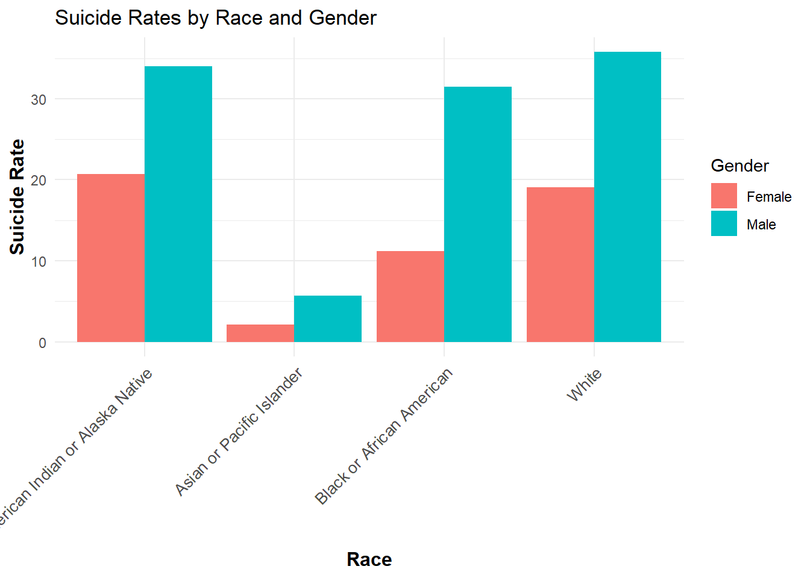
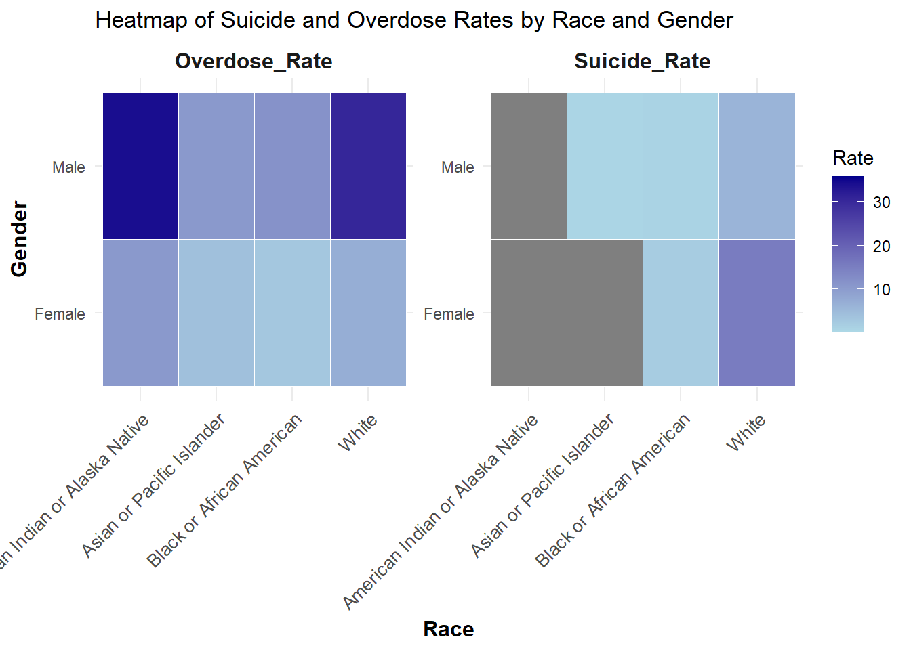
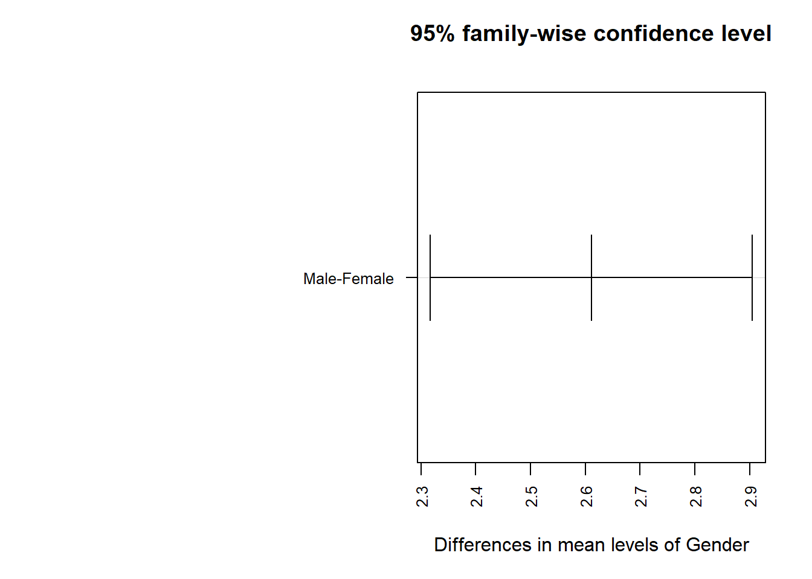
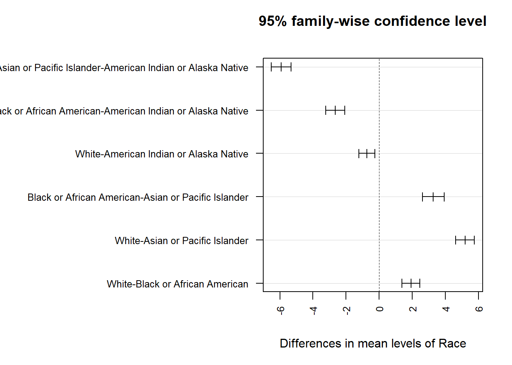
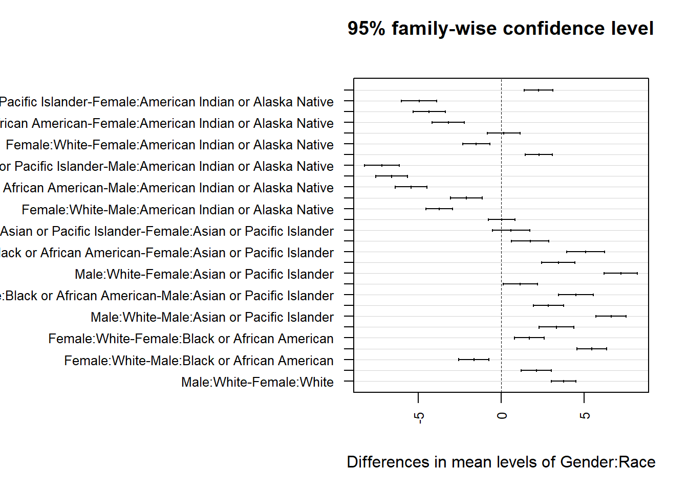

Warning: Removed 1600 rows containing missing values or values outside the scale range
(`geom_bar()`).
Health disparities, particularly those concerning mental health and substance abuse, are among the most critical challenges facing public health systems. Suicide and drug overdoses are leading causes of death in the United States, and their prevalence differs across demographic groups. Examining these disparities provides insights into the populations most at risk and highlights areas for intervention.
This report investigates three research questions regarding suicide and drug overdose rates:
1. Which gender-race combinations show the highest vulnerability to either suicide or drug overdose?
2. Is there a significant difference in suicide rates between male and female across racial group?
3. What are the differences in suicide and drug overdose rates among various age groups?
We will present background information, describe the methods used for analysis, summarize the collected data, and discuss our findings and their implications.
The datasets used in this research were found from Data.gov, the U.S. government’s open data platform that provides access to a wide range of datasets collected by federal agencies. Specifically, the datasets on drug overdose death rates and suicide death rates were provided by the National Center for Health Statistics (NCHS), a division of the Centers for Disease Control and Prevention (CDC). These datasets were created to track trends in mortality rates across different demographic groups and to inform public health strategies. This information provides the foundation for analyzing disparities and identifying groups that may be disproportionately affected. These datasets are aligned with FAIR principles—they are findable, accessible, interoperable, and reusable—and provide the foundation for demographic analyses.
Our analysis focuses on five key attributes: Gender, Age, Race, Suicide Rate, and Overdose Rate. These attributes were chosen as they provide a clear and measurable framework to investigate disparities in public health outcomes. Gender and Race are essential demographic indicators that help identify populations at risk based on societal and systemic factors. Age allows us to assess how vulnerabilities change across different life stages, such as adolescence, middle adulthood, and elderly years. Suicide_Rate and Overdose_Rate are expressed as deaths per 100,000 individuals, offering a standardized metric for comparison across groups. Together, these attributes allow for a multidimensional analysis, capturing the complexity of health disparities and enabling targeted recommendations for intervention.
To answer the research questions, we used different methods to analyze the data. For visual patterns and comparisons, we created charts like bar graphs and heatmaps to show the differences in suicide and overdose rates across groups. For the third research question—examining differences in suicide rates between males and females across racial groups—we performed a correlation and significance test to see if the differences are statistically meaningful. This approach helps us understand which groups are most affected and how these issues vary by demographic factors.
The datasets used in this study follow the FAIR principles, which make them easy to find, use, and share. They are available on Data.gov, a platform that organizes data with clear titles and descriptions so anyone can search for and access them. The data can be downloaded in formats like CSV, which work with many tools like Excel, R, and Python. It is also structured consistently, making it easy to combine with other datasets or use for different kinds of analysis. Detailed information about the data, including how it was collected and its limitations, is provided, ensuring that others can understand and reuse it for their own research. Following these principles helps ensure the data is clear, accessible, and useful for future studies.
Suicide is a complex and deeply personal tragedy, but for some groups, the burden is disproportionately heavy. Among American Indian or Alaska Native males, suicide rates are the highest of any racial or gender group, even exceeding those of White males, who also face alarmingly high rates. This stark reality points to deeply rooted issues such as intergenerational trauma, marginalization, and socio-economic hardships that have plagued these communities for generations. The gender disparity in suicide rates is clear, with males across all racial groups more likely to take their own lives. However, American Indian or Alaska Native females also face significant struggles, with suicide rates higher than females in any other racial category. In contrast, Asian or Pacific Islander males and females show the lowest suicide rates, suggesting the potential influence of cultural or community-based protective factors. These numbers tell a story that demands attention and action. The high suicide rates among American Indian or Alaska Native males highlight a desperate need for targeted mental health support and culturally sensitive interventions. Many of these individuals live in rural or tribal areas where access to mental health care is severely limited, and systemic barriers only deepen the divide. Efforts to support American Indian or Alaska Native females must also address the stigma surrounding mental health, improve community resources, and tackle the socio-economic challenges that disproportionately affect these populations. To fully understand and address these disparities, further research is needed to explore the role of historical trauma, substance abuse, and systemic inequities in healthcare access. The path forward requires empathy, collaboration, and commitment. Engaging directly with tribal communities to develop mental health programs that honor cultural values and traditions can make these interventions more effective. Advocacy for increased funding is crucial to ensure that mental health services reach those most in need, with a focus on both prevention and treatment. Public health campaigns can play a vital role in raising awareness and reducing stigma, particularly among at-risk groups such as American Indian or Alaska Native males. Addressing this issue is not just a matter of statistics—it is a moral imperative to create a society where everyone, regardless of their background, has the support they need to lead a life of hope and purpose.
Warning: Removed 1600 rows containing missing values or values outside the scale range
(`geom_bar()`).
To gain further clarity, a heatmap of suicide and overdose rates by race and gender reveals additional disparities. The darkest shades on the heatmap, representing the highest rates, are concentrated among American Indian or Alaska Native males for suicide and among White males for overdose. This visualization reinforces earlier findings that these groups bear the brunt of these crises. For females, American Indian or Alaska Native women show the highest suicide rates, while White females exhibit higher overdose rates compared to other female groups. Asian or Pacific Islander individuals, consistent with previous observations, show the lightest shades, indicating the lowest rates for both suicide and overdose. The gender disparity persists across all racial groups, with males consistently reporting higher rates than females for both outcomes.
The heatmap also underscores the compounded vulnerabilities faced by American Indian or Alaska Native communities, where both males and females face disproportionately high suicide rates. These findings point to the devastating impacts of systemic inequities, historical trauma, and marginalization. Similarly, the elevated overdose rates among White individuals highlight the significant role of substance use disorders in this demographic.

The combined insights from the bar chart and heatmap underscore the urgency of addressing the intertwined crises of suicide and overdose. The disparities highlighted across racial and gender lines demand comprehensive, targeted interventions. Public health strategies must prioritize culturally sensitive approaches that address the unique challenges faced by vulnerable groups like American Indian or Alaska Native and White individuals. Furthermore, gender-specific programs that integrate mental health care with substance use treatment can help mitigate the dual impact of these crises. Understanding these patterns is not just about analyzing data—it is about crafting effective solutions that provide hope and healing to those most in need. By addressing both prevention and treatment, society can take meaningful steps toward reducing the devastating toll of suicide and overdose on individuals, families, and communities.
The second research question, based on my topic, is: “Is there a significant difference in suicide rates between males and females across racial groups?” To answer this question, I analyzed the data in detail, tested the hypotheses, and determined whether differences in suicide rates were significantly influenced by ethnicity, gender, or their combination. The approach used ensured a thorough examination of the data, producing results that addressed the research question with confidence.
To begin, I claim the two hypotheses to guide the test. The null hypothesis (H₀) assumed that there are no significant differences in suicide rates across gender-race combinations, meaning that any observed differences are purely random and there is no meanful. Conversely, the alternative hypothesis (H₁) stated that there are significant differences in suicide rates across these groups. This hypothesis suggested that certain gender-race combinations might be more vulnerable than others, indicating a relationship between the observed suicide rates and the combination of gender and race. If at least one group showed a substantial deviation, this would provide evidence to reject the null hypothesis in favor of the alternative hypothesis.
The data analysis began with thorough cleaning and organization. I started by assigning meaningful names to each group and removing irrelevant or incomplete data that was not applicable to this research question. Once cleaned, the dataset was categorized into three primary components: gender (male and female), race (White, Black or African American, American Indian or Alaska Native, and Asian or Pacific Islander), and a gender-race combination variable. This categorization was crucial as it allowed for a detailed examination of both the independent effects of gender and race, as well as their interaction. For example, while males overall might have higher suicide rates, interaction analysis could reveal that certain racial groups within males, such as American Indian or Alaska Native males, show significantly higher rates than others. This organization ensured the analysis was as thorough as possible and that no critical trends were overlooked.And all the graph output was below the analyze because it was run out in one combine graph.
Once the data was ready, I performed a Two-Way ANOVA (Analysis of Variance) to determine whether the mean suicide rates differed significantly by race, gender, and their interaction. The Two-Way ANOVA is a statistical test designed to assess the effects of two independent variables—gender and race in this case—on one dependent variable, the suicide rates. The test addressed two primary questions: (1) whether race and gender individually influence suicide rates (main effects), and (2) whether the combination of gender and race creates unique patterns that cannot be explained by their individual effects (interaction effect). For instance, the main effect might show that males have higher suicide rates than females, while the interaction effect could reveal that White males or American Indian or Alaska Native males are particularly vulnerable compared to other groups.
The results from the Two-Way ANOVA provided the first answer to my research question by confirming that there were significant differences in suicide rates between groups. However, while the ANOVA identified the presence of significant differences, it could not pinpoint which specific groups were different. To address this limitation, I used a Tukey HSD (Honestly Significant Difference) post-hoc test, a statistical method designed to compare the means of multiple groups while controlling for Type I error (the risk of incorrectly identifying a significant difference due to random chance). The Tukey HSD test builds confidence intervals for each pairwise comparison between groups. If a confidence interval does not include zero, it confirms that the difference between the two groups is statistically significant. For example, a confidence interval of [2.5, 7.0] for the difference in suicide rates between males and females means the true difference lies between 2.5 and 7.0, and since zero is not included, the difference is substantial.The data is below these analyze.
The Tukey HSD test results provided detailed insights. First, in terms of gender, the findings showed that males consistently had significantly higher suicide rates than females. This conclusion was strongly supported by the confidence intervals, which were all positive and excluded zero, indicating that the difference was unlikely to be random. Next, the analysis turned to racial groups, revealing significant patterns. For instance, Asian or Pacific Islanders had the lowest overall suicide rates, while American Indian or Alaska Native individuals had the highest rates of any racial group. These findings suggested that race alone plays a substantial role in influencing suicide rates.
Finally, when examining the combined effects of gender and race, the interaction analysis revealed even more pronounced disparities. White males and American Indian or Alaska Native males had the highest suicide rates of any group, significantly higher than groups like Asian females and Black females, which showed the lowest rates. The Tukey HSD test validated these findings by showing that the confidence intervals for these comparisons did not overlap zero, confirming their statistical significance. In summary, the statistical analysis provided compelling evidence that gender, race, and their combination significantly influence suicide rates. The rejection of the null hypothesis (H₀) was supported by both the ANOVA and Tukey HSD results. Across all racial groups, males were consistently found to be at greater risk of suicide compared to females. Additionally, racial disparities emerged, with American Indian or Alaska Native individuals facing the highest risk overall. When gender and race were combined, certain groups, such as American Indian or Alaska Native males and White males, were identified as particularly vulnerable. These findings underscore the importance of analyzing gender and race together, as this approach revealed patterns that would not have been apparent if the factors were examined independently. By following this systematic methodology, I was able to confidently answer the research question and uncover significant relationships within the data.



How do Suicide and Drug overdose rates vary across different Age Groups?
This research question examines the disparities in suicide and drug overdose rates among various age groups. By focusing on age as a demographic factor, this analysis seeks to uncover patterns and trends that indicate which age groups are most at risk for either suicide or drug overdoses. To address this, we merged two datasets, each detailing mortality rates for suicides and drug overdoses, and analyzed their attributes across distinct age groups.

The trends revealed in the bar chart emphasize the need for a thoughtful and targeted approach to addressing the intertwined challenges of suicide and drug overdose rates across different age groups. The data tells a story that is both sobering and illuminating, underscoring the unique vulnerabilities and stressors that individuals face at different stages of life. By understanding these nuances, we can design interventions that meet people where they are and provide the support they need.
For young adults in the 15–24 years age group, the relatively low suicide rates offer a glimmer of hope, suggesting that protective factors such as community support and family connections might be playing a role. However, their drug overdose rates, while not the lowest, are a cause for concern. This highlights the importance of proactive efforts to educate young people about the risks of substance abuse while fostering environments that encourage open conversations about mental health. Programs in schools and universities that focus on peer support, resilience-building, and accessible mental health counseling could be instrumental in addressing these challenges before they escalate.
The 25–34 years age group emerges as the most vulnerable demographic for drug overdoses, with rates peaking during this phase of life. This stage is often defined by major transitions—starting careers, forming relationships, and navigating financial independence. For some, these pressures can lead to substance use as a coping mechanism. To address this, it’s critical to create systems of support that reduce stigma and provide tangible resources. Workplace mental health programs, affordable treatment options, and community-based initiatives could go a long way in alleviating the burden faced by young adults during these formative years.
When it comes to suicide rates, the 45–54 years age group faces the highest risk of any demographic. This period of life is often marked by mid-life pressures such as financial strain, career stagnation, and caregiving responsibilities, all of which can weigh heavily on mental health. For individuals in this age group, interventions that focus on stress management and relief from caregiving burdens are essential. Employers can play a pivotal role by providing robust mental health benefits, while community organizations could create support groups tailored to the needs of this demographic. Addressing these pressures holistically can help reduce the risk of suicide during this critical stage.
Interestingly, the 65–74 years age group stands out as the cohort with the lowest rates of drug overdoses and relatively low suicide rates. This stability suggests that this group may benefit from a unique combination of protective factors—perhaps a sense of financial security, established social networks, or fewer life transitions compared to younger or older groups. Studying these factors further could help identify strategies to build resilience in other demographics. However, even this group is not immune, and efforts to maintain their well-being through continued access to health care and social engagement remain vital.
A stark contrast is seen in the 85 years and older age group, where suicide rates spike once again. This secondary peak tells a poignant story of the challenges associated with aging: isolation, declining health, and grief from losing loved ones. To combat these issues, targeted interventions must focus on increasing social connections for elderly individuals, offering grief counseling, and ensuring mental health care is readily accessible. Programs that facilitate intergenerational engagement, community activities, and in-home support can help reduce the feelings of loneliness and despair that are so common in this demographic.
Across all age groups, one consistent trend stands out: suicide rates surpass drug overdose rates. This underscores the pervasive nature of mental health struggles across the lifespan, even in populations where substance use is a pressing issue. Younger adults may face higher overdose risks, but the concern for suicide remains equally urgent. For older populations, drug overdoses become nearly absent, but the mental health toll of aging takes center stage.
These insights highlight the need for a life-course approach to public health interventions. Each age group faces its own set of challenges, shaped by the unique social, economic, and psychological factors at play during their stage of life. By investing in tailored, age-specific programs, we can address these challenges head-on and create a society that prioritizes mental health and well-being. Whether it’s fostering resilience in young adults, providing stress relief for middle-aged individuals, or supporting the elderly through compassionate care, this data reminds us that prevention and support are always possible. Together, we can reduce the toll of these preventable tragedies and ensure a healthier, more hopeful future for all.
# This code will run, but the code and its output will be hidden.
library(dplyr)
library(tidyr)
suicide_data <- read.csv("https://data.cdc.gov/api/views/95ax-ymtc/rows.csv?accessType=DOWNLOAD")
drug_overdose_data <- read.csv("https://data.cdc.gov/api/views/9j2v-jamp/rows.csv?accessType=DOWNLOAD")
# Clean the suicide dataset
suicide_clean <- suicide_data %>%
mutate(
Gender = case_when(
grepl("Male", STUB_LABEL) ~ "Male",
grepl("Female", STUB_LABEL) ~ "Female",
TRUE ~ "All persons"
),
Race = case_when(
grepl("White", STUB_LABEL) ~ "White",
grepl("Black or African American", STUB_LABEL) ~ "Black or African American",
grepl("Asian or Pacific Islander", STUB_LABEL) ~ "Asian or Pacific Islander",
grepl("American Indian or Alaska Native", STUB_LABEL) ~ "American Indian or Alaska Native",
TRUE ~ "Unknown"
)
) %>%
select(
Gender,
Race,
Year = YEAR,
Age_Group = AGE,
Suicide_Rate = ESTIMATE
) %>%
filter(Gender != "All persons") # Exclude general rows if needed
# Clean the drug overdose dataset
drug_overdose_clean <- drug_overdose_data %>%
mutate(
Gender = case_when(
grepl("Male", STUB_LABEL) ~ "Male",
grepl("Female", STUB_LABEL) ~ "Female",
TRUE ~ "All persons"
),
Race = case_when(
grepl("White", STUB_LABEL) ~ "White",
grepl("Black or African American", STUB_LABEL) ~ "Black or African American",
grepl("Asian or Pacific Islander", STUB_LABEL) ~ "Asian or Pacific Islander",
grepl("American Indian or Alaska Native", STUB_LABEL) ~ "American Indian or Alaska Native",
TRUE ~ "Unknown"
)
) %>%
select(
Gender,
Race,
Year = YEAR,
Age_Group = AGE,
Overdose_Rate = ESTIMATE
) %>%
filter(Gender != "All persons") # Exclude general rows if needed
# Merge the two datasets
merged_data <- merge(
suicide_clean,
drug_overdose_clean,
by = c("Gender", "Race", "Year", "Age_Group"),
all = FALSE
)
merged_data <- merged_data %>%
filter(Race != "Unknown") %>% # Remove rows with unknown race
select(-Age_Group, -Year) # Drop the Age_Group and Year columns entirely
write.csv(merged_data, "Cleaned_Combined_Death_Rates.csv", row.names = FALSE)
write.csv(
merged_data,
"C:/Users/hanzi/Downloads/Cleaned_Combined_Death_Rates.csv",
row.names = FALSE
)
## Image 1 for Question 1
library(ggplot2)
# Bar chart: Death rates by gender and race
ggplot(data = merged_data, aes(x = Race, y = Suicide_Rate, fill = Gender)) +
geom_bar(stat = "identity", position = "dodge") +
theme_minimal() +
theme(
axis.text.x = element_text(angle = 45, hjust = 1, size = 10),
axis.title.x = element_text(size = 12, face = "bold"),
axis.title.y = element_text(size = 12, face = "bold")
) +
labs(
title = "Suicide Rates by Race and Gender",
x = "Race",
y = "Suicide Rate",
fill = "Gender"
)
## Image 2 for Question 1
# Load required library
library(tidyr)
# Transform data to long format
merged_data_long <- merged_data %>%
pivot_longer(cols = c(Suicide_Rate, Overdose_Rate),
names_to = "Variable",
values_to = "Rate")
# Heatmap: Combined rates by race and gender
library(ggplot2)
ggplot(data = merged_data_long, aes(x = Race, y = Gender, fill = Rate)) +
geom_tile(color = "white") +
facet_wrap(~ Variable, scales = "free", ncol = 2) + # Adjust facets
scale_fill_gradient(low = "lightblue", high = "darkblue", name = "Rate") +
theme_minimal() +
theme(
axis.text.x = element_text(angle = 45, hjust = 1, size = 10), # Rotate and space x-axis labels
axis.title.x = element_text(size = 12, face = "bold"),
axis.title.y = element_text(size = 12, face = "bold"),
strip.text = element_text(size = 12, face = "bold") # For facet titles
) +
labs(
title = "Heatmap of Suicide and Overdose Rates by Race and Gender",
x = "Race",
y = "Gender"
)
# Load necessary libraries
library(dplyr)
# Step 1: Load the dataset
data <- read.csv("Cleaned_Combined_Death_Rates.csv")
# Step 2: Clean the data
cleaned_data <- data %>%
select(Gender, Race, Suicide_Rate) %>%
na.omit()
# Step 3: Perform Two-Way ANOVA
# Test for differences in suicide rates between gender and racial groups
anova_model <- aov(Suicide_Rate ~ Gender * Race, data = cleaned_data)
# Step 4: Perform post-hoc Tukey HSD test
tukey_results <- TukeyHSD(anova_model)
# Step 5: Adjust graphical parameters for better margins and readability
par(mar = c(5, 18, 4, 2)) # Increase left margin for better label visibility
par(las = 2) # Rotate axis labels
par(cex.axis = 0.8) # Reduce axis text size
# Step 6: Plot Tukey HSD results
plot(tukey_results)
# Visualize: Bar Chart Comparing Suicide and Overdose Rates
age_summary <- merge(
suicide_clean %>%
group_by(Age_Group) %>%
summarize(Avg_Suicide_Rate = mean(Suicide_Rate, na.rm = TRUE)),
drug_overdose_clean %>%
group_by(Age_Group) %>%
summarize(Avg_Overdose_Rate = mean(Overdose_Rate, na.rm = TRUE)),
by = "Age_Group"
)
# Reshape data for plotting
age_summary_long <- age_summary %>%
pivot_longer(
cols = c(Avg_Suicide_Rate, Avg_Overdose_Rate),
names_to = "Rate_Type",
values_to = "Rate"
)
# Create the bar chart
ggplot(age_summary_long, aes(x = Age_Group, y = Rate, fill = Rate_Type)) +
geom_bar(stat = "identity", position = "dodge") +
theme_minimal() +
theme(axis.text.x = element_text(angle = 45, hjust = 1)) +
labs(
title = "Comparison of Suicide and Drug Overdose Rates Across Different Age Groups",
x = "Age Group",
y = "Rate (Per 100,000 Residents)",
fill = "Rate Type"
)
# Load Required Libraries
library(dplyr)
library(tidyr)
library(ggplot2)
library(knitr)
# Load Datasets
suicide_data <- read.csv("https://data.cdc.gov/api/views/95ax-ymtc/rows.csv?accessType=DOWNLOAD")
drug_overdose_data <- read.csv("https://data.cdc.gov/api/views/9j2v-jamp/rows.csv?accessType=DOWNLOAD")
# Clean the Suicide Dataset
suicide_clean <- suicide_data %>%
mutate(
Gender = case_when(
grepl("Male", STUB_LABEL) ~ "Male",
grepl("Female", STUB_LABEL) ~ "Female",
TRUE ~ "All persons"
)
) %>%
select(Gender, Age_Group = AGE, Year = YEAR, Suicide_Rate = ESTIMATE) %>%
filter(Gender == "All persons", !is.na(Suicide_Rate))
# Clean the Drug Overdose Dataset
drug_overdose_clean <- drug_overdose_data %>%
mutate(
Gender = case_when(
grepl("Male", STUB_LABEL) ~ "Male",
grepl("Female", STUB_LABEL) ~ "Female",
TRUE ~ "All persons"
)
) %>%
select(Gender, Age_Group = AGE, Year = YEAR, Overdose_Rate = ESTIMATE) %>%
filter(Gender == "All persons", !is.na(Overdose_Rate))
# Merge the Datasets by Age Group and Year
merged_data <- merge(
suicide_clean,
drug_overdose_clean,
by = c("Age_Group", "Year"),
all = FALSE
)